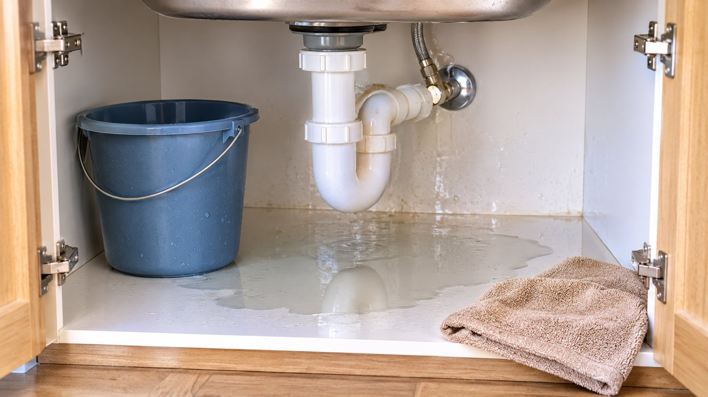
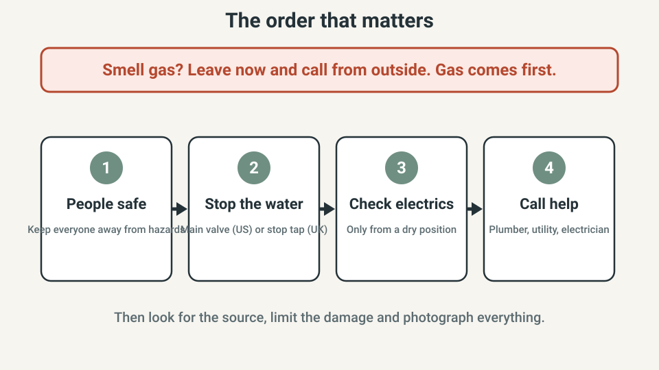
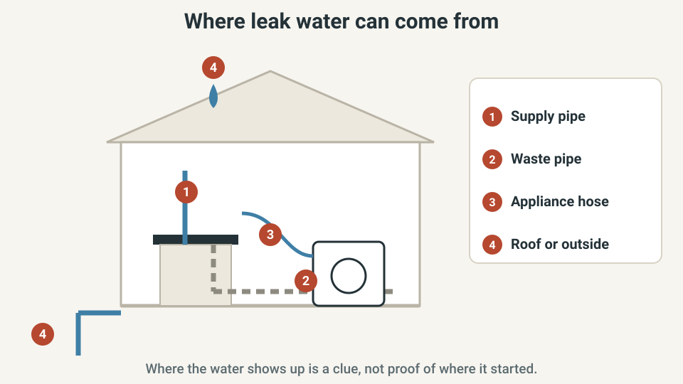
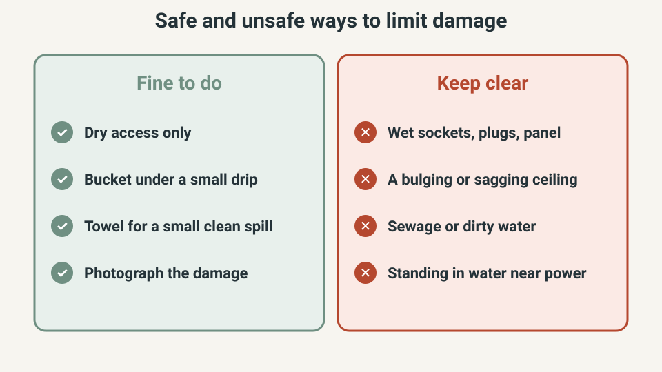

WEEKEND PROJECTS · WATER LEAKS
What to Do First When You Discover a Water Leak

Water where it should not be makes people act fast and badly. The order matters more than the speed: keep people away from hazards, stop the water if you can reach the valve safely, deal with electricity from a dry position, then find the source and call the right person. This guide follows that order, with US and UK wording. I am not a plumber.
The quick answer
- Gas smell? Leave and call from outside. That beats everything else here.
- Keep people and pets away from wet electrics, sewage-smelling water and any bulging ceiling.
- Stop the water at the main shut-off valve (US) or the stop tap (UK), only if you can get there without crossing the wet area.
- Electricity: switch off at the panel only from a dry position. Otherwise stay away and call.
- Look for clues about the source, without cutting into anything, then call a plumber, utility or electrician.
- Photograph it and start safe drying within 24 to 48 hours.
Quick plan
| Item | Detail |
|---|---|
| Time | The first 30 minutes are about safety and stopping the water |
| Cost | Free to make safe; repair and drying costs vary too much to quote |
| Best for | Wet ceilings, pools under sinks, hissing pipes, soaked floors |
| Goal | Protect people, stop the water, limit damage, get the right help |
The order that matters
Under stress it helps to have one sequence in your head. Gas first, then people, then water, then electricity, then help. Everything below hangs off that.

If you are tempted to start investigating, resist it for a few minutes. Water that keeps flowing keeps adding damage, so investigate after you have stopped it.
Make the area safe first
Gas. If you smell gas, do not stay to finish the water job. In the US, the American Gas Association says to leave the building at once with everyone else, avoid anything that could spark (no switches, appliances, flashlights or phones inside) and call 911 or your gas utility from a phone away from the area. In Great Britain, the Health and Safety Executive says to call National Grid's Gas Emergency number, 0800 111 999, open all the doors and windows, and shut off the gas at the meter control valve if you know where it is. My own rule is simpler: step outside first either way.
Water near electricity. If water is near sockets, appliances, light fittings or the electrical panel, treat the whole wet area as live until proven otherwise. Keep people out of it.
A bulging or sagging ceiling. Water can pool above a ceiling and bring it down. Keep everyone out from underneath it. I would not pierce it to drain it, because you would be standing in the line of fall. If it looks unstable, treat it as an emergency.
Sewage. If the water might be sewage, do not touch it or try to clear it yourself. The EPA says damage from sewage or other contaminated water needs a professional with experience in that kind of cleanup.
Stop the incoming water
If the leak looks like a pipe, tap, toilet, tank or appliance hose, stopping the supply is the next job. In the US that is the main water shut-off valve. In the UK it is the stop tap, also called a stopcock. WaterSafe says the first thing to do is turn off all water at the stop tap, which is often under the kitchen sink but depends on where the supply enters the property, and sometimes there is a second stop valve in the loft or airing cupboard.
Do not cross standing water to reach it. If a UK stop tap will not turn, WaterSafe says not to force it and to get a plumber to replace it. Our guide to finding and operating the main shutoff covers the valve itself, so here I keep to the essentials.
Some of WaterSafe's advice is UK-specific because of how British systems are plumbed: it says to open all cold taps so the pipework and storage drain quickly (and not to turn on hot taps), switch off the central heating and any electric immersion heater, then call a WaterSafe-registered plumber. If the leak is on the supply pipe outside your home, check with your water supplier, as they may be able to help repair it. I would not apply the open-the-taps step to a US home without a plumber's advice.
If the leak is clearly one appliance and its own supply valve is easy and dry to reach, that is another way to stop it. Do not disconnect hoses or drag an appliance out while the floor is wet or the appliance is still plugged in.
Electricity: from a dry position only
Water first does not mean taking risks to reach a valve, and the same goes for the panel. Electrical Safety First's advice for flooded homes is to switch off the electricity at the fuse box only if it is safe to do so. If the fuse box looks wet or damaged, do not touch it and ask a professional. Where water may have reached the installation, they point people to a registered electrician.
Whatever the source, never touch appliances, cables, sockets or switches while standing in water. If you cannot reach the panel without stepping through the wet, stay out and call a licensed electrician (US), a registered electrician (UK) or your power company.
Where is the water coming from?
Once people are safe and the water is under control, look for clues. The aim is not to diagnose the plumbing; it is to give whoever you call something useful to work with.

- Supply pipe: it keeps leaking even when nothing is running, and you may hear hissing or notice lower pressure.
- Waste pipe or drain: it gets worse right after a sink, bath, shower or appliance drains.
- Appliance or hose: the water is beside a washing machine, dishwasher or water heater, often only while it runs.
- Roof or outside: it worsens after rain, or water is surfacing in a garden or on a pavement.
These are my practical suggestions, not a test. Water travels along pipes and joists before it appears, so a stain is not necessarily under the leak. Do not cut into a ceiling or wall, or pull out an appliance, to investigate. If the source is hidden, that is a job for a plumber or a leak-detection specialist.
Limit the damage safely
Only once the source is controlled and the room is safe to enter. Put a bucket or tray under a small clean drip and use towels for small amounts of clean water. Move small belongings and rugs out of the wet area if you can without walking through hazardous water. Do not lift heavy furniture, enter a flooded basement or stand under a wet ceiling to save things.

The CDC says to use fans and dehumidifiers when electricity is safe to use, so hold off if there is any doubt. It also warns never to mix cleaning products, and above all not to mix bleach and ammonia, because that creates toxic vapors.
Drying and mold
Mold needs moisture, and the EPA says the key to mold control is moisture control. Its advice is to dry water-damaged areas and items within 24 to 48 hours, and it notes that in most cases mold will not grow if wet materials are dried in that window. The CDC says the same: dry everything as quickly as possible, within 24 to 48 hours if you can.
That window is a target, not permission to wait a day. Start safe drying as soon as the source is stopped. Do not assume a surface that feels dry is dry behind a cabinet or inside a wall.
If mold does appear, the EPA says to clean it up and fix the water problem, since cleaning without fixing it will probably bring the mold back. For a patch smaller than about 10 square feet (roughly 3 by 3 feet) it says you can usually handle it yourself with gloves, goggles and an N-95 respirator. For larger areas, hidden mold, or sewage, bring in a professional. Do not paint or caulk over mold. If the leak is under a floor or in a crawl space, our damp crawl space guide covers the moisture side.
Who to call
- Plumber: for water from a pipe, fitting, tap, toilet, tank or appliance connection, a leak you cannot stop, or a hidden one. US: a licensed plumber. UK: a WaterSafe-registered plumber.
- Water utility or supplier: for water rising in a street or pavement, or a leak on the supply pipe outside your home in the UK.
- Electrician or power company: if water has reached wiring, sockets, light fittings, appliances or the panel.
- Gas emergency service: for any gas smell. 911 or your gas utility in the US; 0800 111 999 in Great Britain.
- Drainage or sewage professional: for sewage, backed-up drains or contaminated water.
- Landlord or building manager: if you rent, tell them straight away, in writing. The EPA also says renters should report plumbing leaks and moisture problems immediately.
What to document
Once everyone is safe and the leak is controlled, take photographs: the source if visible, the wet area, any ceiling or wall stain, flooring and damaged belongings. Photograph items before you throw them out; the CDC suggests this for insurance claims. Write down when you noticed it, which room, whether it was flowing, dripping or hissing, whether anything was running or it had rained, what you did to stop it and whom you called. Then read your policy and follow your insurer's instructions. I cannot say whether a given leak is covered.
What not to do
- Walk through water to reach a valve, socket or panel.
- Touch wet appliances, plugs, sockets or switches.
- Stand under a bulging or sagging ceiling.
- Investigate a gas smell from inside the home.
- Touch water that may be sewage.
- Run fans or dehumidifiers before the electrics are safe.
- Mix cleaning products.
- Cut into a wall or ceiling to find the source.
- Assume it is fixed because the dripping stopped.
For a leak caused by cold weather, our frozen pipes guide covers thawing and prevention, so I do not repeat it here.
Frequently asked questions
Should I turn off the water or the electricity first?
If there is no gas smell and you can reach the water valve without stepping into the wet area, stop the water first. If water is near sockets, appliances or the panel, do not touch them. Switch off at the panel only if you can reach it from a dry position; if you cannot, stay away and call an electrician or your power company.
What if water is coming through the ceiling?
Keep people out from underneath it, especially if it bulges or sags, because water pooled above can bring the ceiling down. I would not pierce it, since you would be standing under it. Stop the water if you safely can and call a plumber, and treat a ceiling that looks unstable as an emergency.
How quickly should I dry things to avoid mold?
The EPA says to dry water-damaged areas and items within 24 to 48 hours, and notes that in most cases mold will not grow if wet materials are dried in that window. The CDC gives the same 24 to 48 hours. It is a target, not a delay: start as soon as the source is stopped and the room is safe.
Can I run a fan or dehumidifier straight away?
Only when the electricity is safe. The CDC says to use fans and dehumidifiers when electricity is safe to use. If water has reached sockets, wiring or appliances, wait for an electrician.
Do I call a plumber or the water company?
Call a plumber for pipes, taps, toilets, tanks and appliance connections inside the home. In the UK, WaterSafe says that if the leak is on the supply pipe outside your home you should check with your water supplier, who may be able to help. For water coming up in a street or pavement, contact the local water utility.
What if the water smells like sewage?
Treat it as contaminated: avoid contact, stop using the affected fixtures and call a professional. The EPA says that when damage is caused by sewage or other contaminated water, you should call in a professional with experience in that kind of cleanup.
Should I photograph the damage before cleaning up?
Yes, once it is safe. The CDC suggests taking photos of discarded items when you may file an insurance claim. Then read your policy; I cannot tell you what yours covers.
Keep going
- Where to place water leak sensors around your home
- How to protect pipes from freezing and respond to a burst pipe
- How to fix a damp crawl space
- Why is my bathroom exhaust fan dripping water?
- How to read your water meter to find a hidden leak
- How to shut off water to a toilet, sink or washing machine
Sources and further reading
- WaterSafe Register, what to do if you find a leak (UK): watersafe.org.uk leak advice
- US EPA, a brief guide to mold, moisture and your home: epa.gov mold guide
- CDC, 8 tips to clean mold: cdc.gov mold cleanup tips
- Health and Safety Executive, domestic gas FAQs (Great Britain): hse.gov.uk domestic gas
- American Gas Association, using natural gas safely (US): aga.org natural gas safety
- Electrical Safety First, advice for flooded homes (UK): electricalsafetyfirst.org.uk flood advice
Last reviewed: November 21, 2026. Gas emergency numbers and procedures differ by country and utility; check yours. The 24 to 48 hour drying figure comes from US sources, and I did not find a matching UK figure.